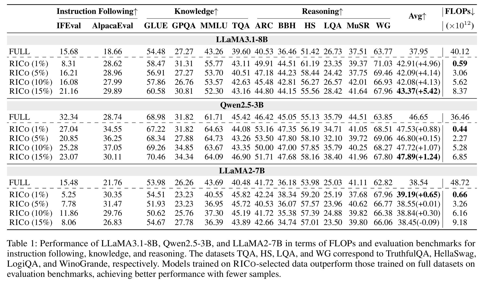
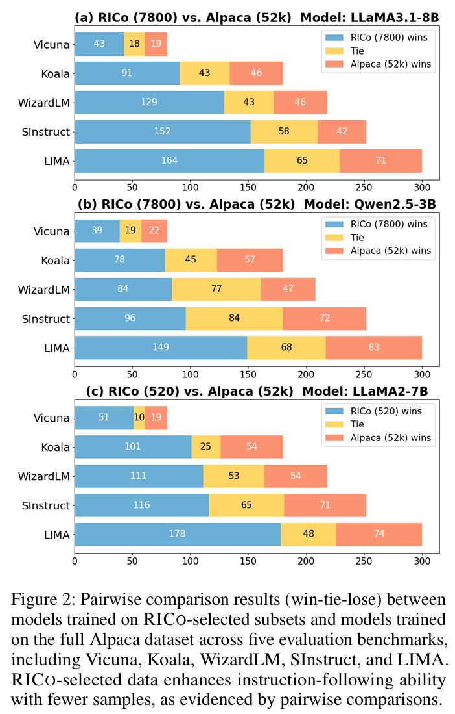
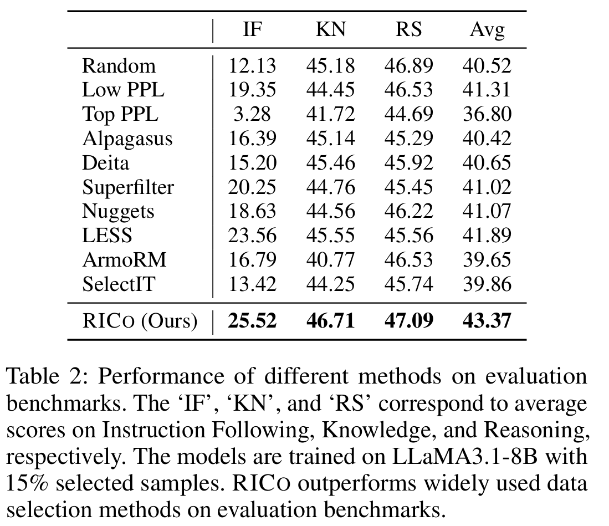
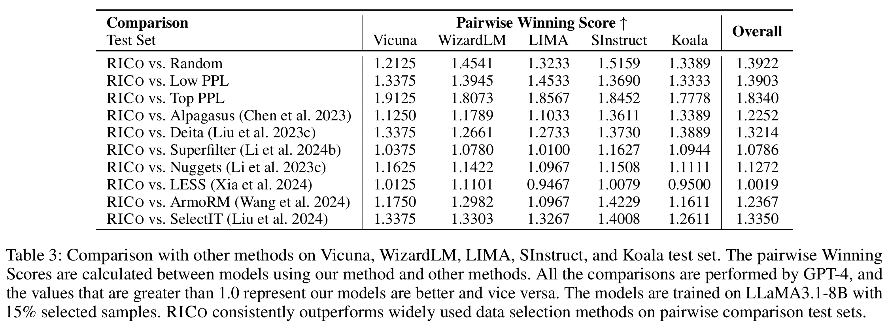
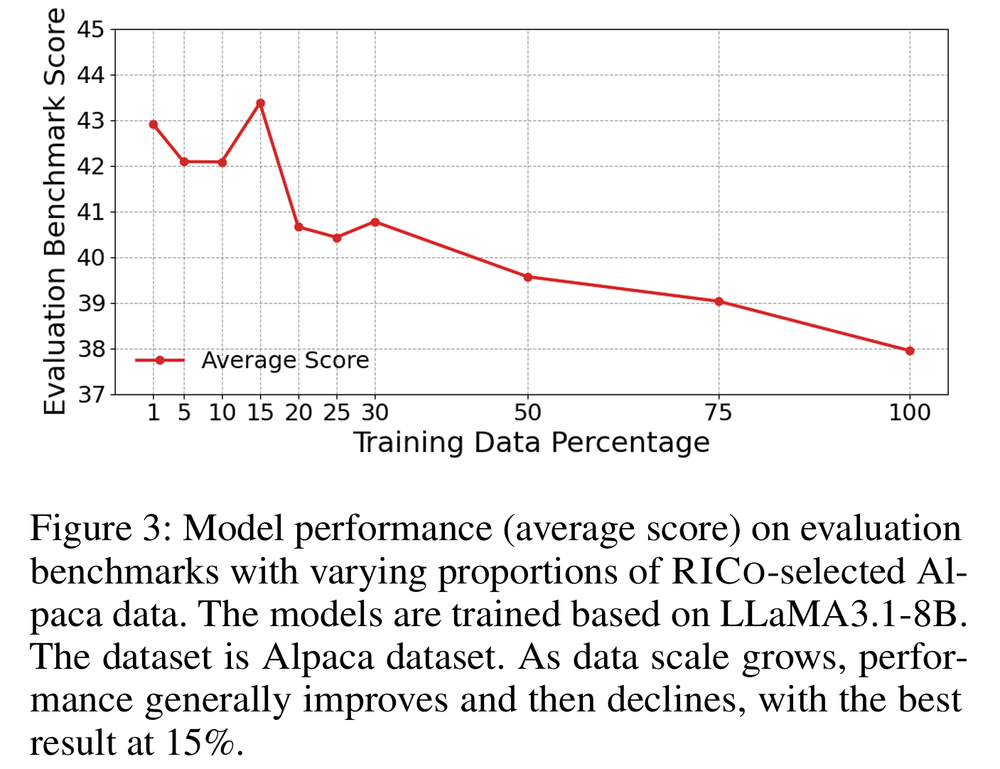
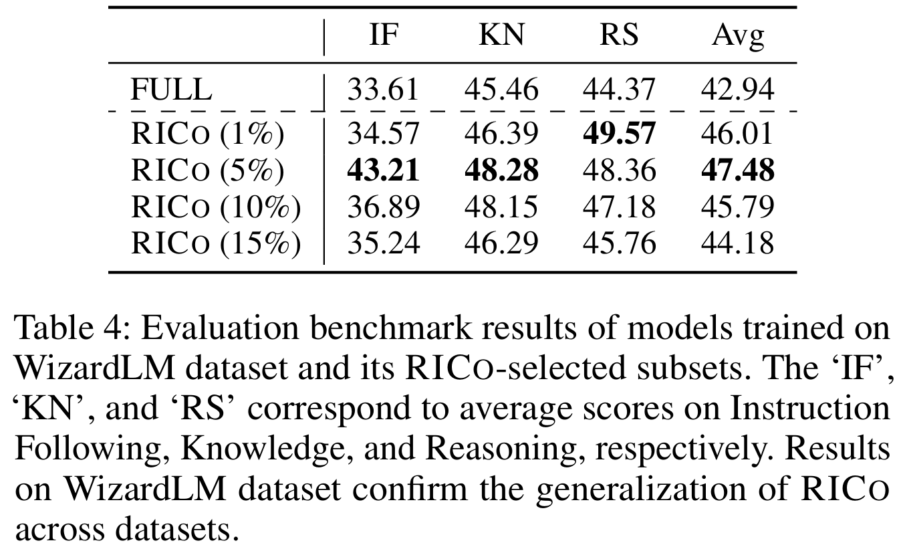
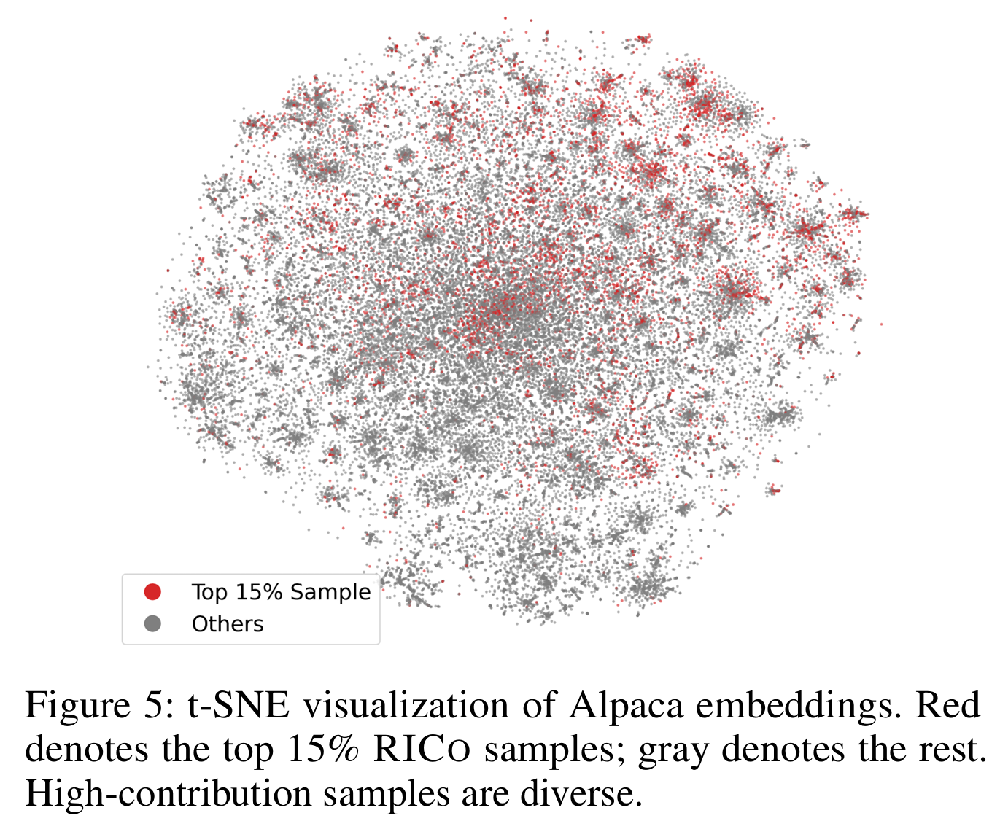
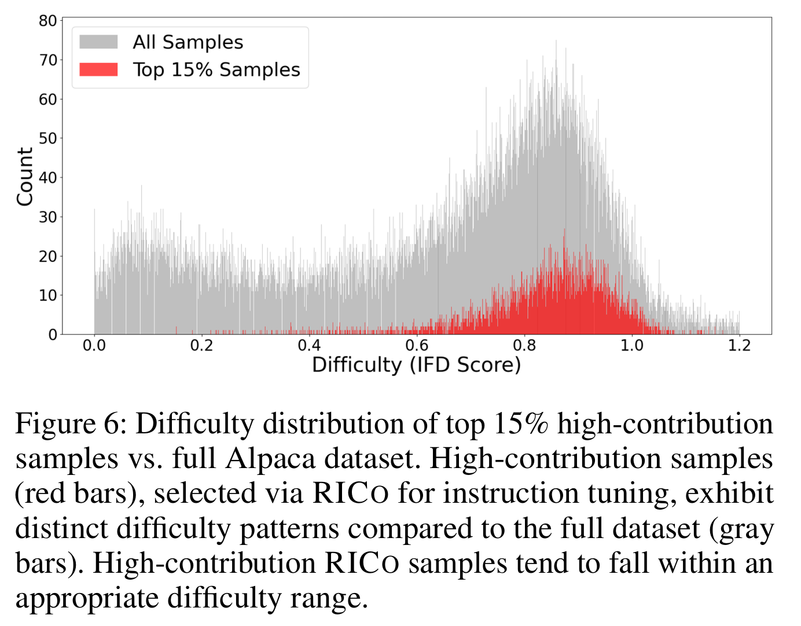

Abstract
Data selection for instruction tuning is crucial for improving the performance of large language models (LLMs) while reducing training costs. In this paper, we propose Refined Contribution Measurement with In-Context Learning (RICo), a novel gradient-free method that quantifies the fine-grained contribution of individual samples to both task-level and global-level model performance. RICo enables more accurate identification of high-contribution data, leading to better instruction tuning. We also introduce a lightweight selection paradigm trained on RICo scores, enabling scalable data selection with strictly linear inference complexity. Extensive experiments on 3 LLMs across 12 benchmarks and 5 pairwise evaluation sets demonstrate the effectiveness of RICo. Remarkably, on LLaMA3.1-8B, models trained on 15% of RICo-selected data outperform full datasets by 5.42 percentage points and exceed the best performance of widely used selection methods by 1.48 percentage points. We further analyze high-contribution samples selected by RICo, which show both diverse tasks and appropriate difficulty levels, rather than just the hardest ones.
Introduction
Recent advances in LLMs have shown that instruction tuning effectively improves model performance, typically relying on large-scale datasets. However, studies suggest that carefully selecting high-quality subsets can achieve better results at lower computational cost. Previous automated data selection methods often use gradient-based sample valuation, but are computationally expensive. Other lightweight methods rely on manually designed heuristics (e.g., textual features and instruction difficulty), but they do not directly measure training impact and may introduce bias. Recent ICL-based binary comparisons leverage ICL's implicit fine-tuning, but still yield coarse signals, favor longer samples, and require many inference calls.
Our Work
- We propose RICo, a novel gradient-free data selection method that quantifies the refined contribution of individual samples to overall model performance, with fairness adjustments to reduce length-related bias.
- We introduce a lightweight selection paradigm trained on RICo contribution scores, enabling scalable data selection with strictly linear inference complexity.
- We demonstrate the effectiveness of RICo through experiments on multiple models, 12 widely used benchmarks, and 5 pairwise test sets, showing consistent performance gains over baselines.
Results




We demonstrate the effectiveness of RICo across multiple models and evaluation settings. Experiments on LLaMA3.1-8B, Qwen2.5-3B, and LLaMA2-7B are conducted using 12 widely used benchmarks and 5 pairwise comparison test sets.
Models trained on a small fraction of RICo-selected data outperform their full-data counterparts. With only 15% of the data, LLaMA3.1-8B and Qwen2.5-3B improve by 5.42 and 1.24 percentage points in average benchmark scores, respectively; LLaMA2-7B achieves a 0.65-point gain using just 1%. In pairwise comparison, we evaluate the strongest models from benchmark results: LLaMA3.1-8B, Qwen2.5-3B, and LLaMA2-7B, trained on 7,800, 7,800, and 520 RICo-selected samples, respectively. All three consistently outperform their full-data counterparts across all five test sets.
RICo also surpasses widely used selection methods. For example, it improves LLaMA3.1-8B's average benchmark score by 1.48 points over the best baseline. In pairwise comparison, RICo shows consistent and clear advantages over widely used selection methods across all test sets and in overall performance.
Analysis




Optimal Data Scale: We examine how data scale affects instruction-tuning performance using LLaMA3.1-8B. Performance generally rises and then falls, with the average benchmark score peaking at 15% of RICo-selected data and outperforming models trained on larger subsets.
Generalization across Datasets: We apply the Alpaca-trained selection paradigm to WizardLM. The model trained on just 5% of WizardLM achieves the best performance, confirming RICo's effectiveness across datasets without retraining the selection model.
Characteristics of Selected Samples: t-SNE analysis shows that high-contribution samples are diverse and locally clustered. These samples are generally more difficult than the full dataset, but are not skewed toward the hardest examples, suggesting that RICo favors appropriately challenging data while avoiding extremes.
Conclusion
We propose RICo, a gradient-free data selection method that quantifies individual sample contributions for instruction tuning. By computing task- and global-level contributions, RICo identifies high-contribution data. We also introduce a lightweight paradigm for efficient data curation. Across 3 LLMs, 12 benchmarks, and 5 pairwise tests, RICo-selected data outperforms full-data and other methods, achieving better results with fewer samples. We further analyze optimal data scales, generalization, ablation, and sample characteristics.
BibTeX
@inproceedings{yang2026rico,
title={RICo: Refined In-Context Contribution for Automatic Instruction-Tuning Data Selection},
author={Yang, Yixin and Dong, Qingxiu and Yao, Linli and Zhu, Fangwei and Luo, Weilin and Wang, Bin and Sui, Zhifang},
booktitle={Proceedings of the AAAI Conference on Artificial Intelligence},
volume={40},
number={40},
pages={34349--34357},
year={2026}
}